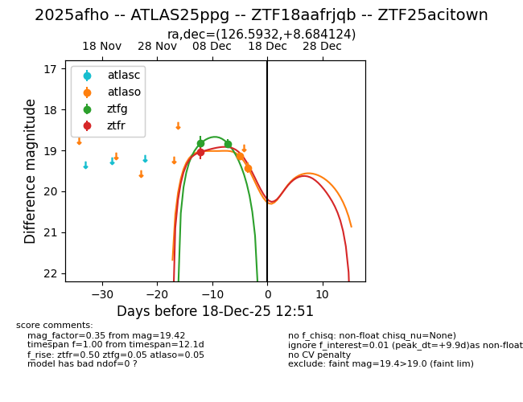
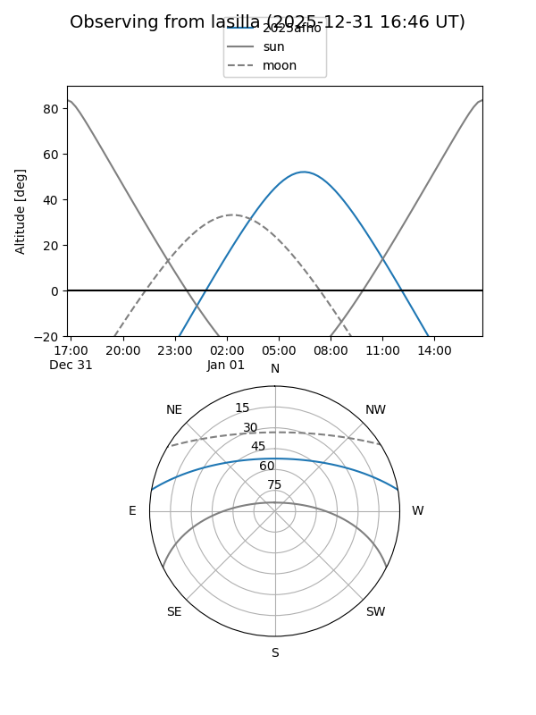
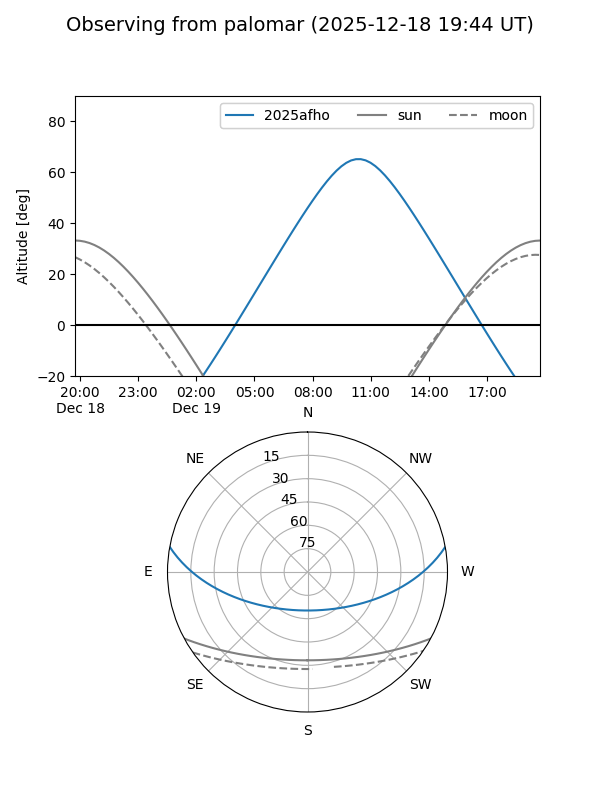
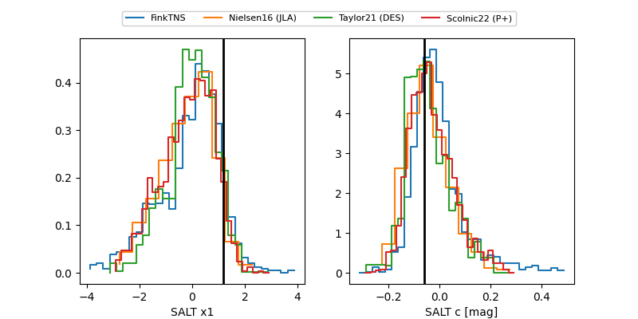

2025afho
Target 2025afho at 2025-12-31 16:59
Aliases and brokers:
FINK:
Lasair:
ALeRCE:
TNS:
YSE:
alt names
ZTF25acitown (ztf)
ZTF18aafrjqb (fink_ztf)
2025afho (tns,yse)
ATLAS25ppg (atlas)
Coordinates:
equatorial (ra, dec) = 126.5932,+8.68412
equatorial (HMS+DMS) = 08:26:22.37,+08:41:02.85
galactic (l, b) = (215.9080,+25.02095)
Flags:
Photometry:
last atlaso=19.42, ztfg=19.70, ztfr=19.47
2 atlaso, 3 ztfg, 3 ztfr detections
Lightcurve

Visibility


Additional plots
